From director George Miller, originator of the post-apocalyptic genre and mastermind behind the legendary “Mad Max” franchise, comes “Mad Max: Fury Road,” a return to the world of the Road Warrior, Max Rockatansky. Haunted by his turbulent past, Mad Max believes the best way to survive is to wander alone. Nevertheless, he becomes swept up with a group fleeing across the Wasteland in a War Rig driven by an elite Imperator, Furiosa. They are escaping a Citadel tyrannized by the Immortan Joe, from whom something irreplaceable has been taken. Enraged, the Warlord marshals all his gangs and pursues the rebels ruthlessly in the high-octane Road War that follows.
At the moment of boarding, the pleasure of running without interruption for only 120 seconds. There are different kinds of peripheral pleasures. Everything from film directing, action, shooting, music, art, costumes, acting to actors makes us look back on what the essence of the movie we saw in the past. The moment you see it, you will not be able to shake the image of this hell.
Lee Hwajeong
(Cine 21 reporter)
The Perfect Resurrection of the Legend
I did not miss the details of the action while I was running through like crazy. There is nothing short of developing into a new series, with a strong and powerful story, a wonderful character, a scale, action densities and freshness, and a charming world view mixed with cynicism and hope. Welcome back, George Miller!
Lee Sukmyeong
(Movie journalist)
Welcome to [Mad Max] World!
Streaking and chasing, the pinnacle of its simple aesthetics. From the beginning to the end, I get the feeling of being dragged away without being caught in the throat. [Mad Max], who came back in 30 years with a message about the method of finding hope in the land of survival, came back.
Lee Eunseon
(Magazine ‘M’ reporter)
New Legend, Masterpiece
A chain of elegant, furious, and dense car action. The design of the action to be overcome is satisfactory both in density and quality. The return of the wheeled western. A camera movement that makes you imagine what you "take" instead of "drawing" your imagination. It's not just cars that run. Silent film armed with metal sound. At least the car chasing action will be divided before and after [Mad Max: Road of Rage].
PAIR OF 1959 CADILLAC COUPE DE VILLES IN FLAGRANTE DELICTO ARE SPLIT, WIDENED AND MOUNTED ONE TO THE OTHER, PITCHED AT A RAKISH ANGLE BY HUGE DOUBLE REAR WHEELS AND POWERED BY TWIN V8'S SLAVED TO A HANDMADE GEARBOX CAPABLE OF HARNESSING AND HARMONISING THE ULTIMATE POWER OF THE ULTIMATE LEADER. THE FLAGSHIP OF THE CITADEL'S ARMADA, THE GIGAHORSE IS MEMORY OF PAST GLORY AND PLEDGE OF FUTURE VICTORY. ARMED WITH WHALER'S HARPOON AND THE DEVIL'S OWN FLAMETHROWER, THE GIGAHORSE IS LIKELY THE FIRST THING YOU HEAR AND THE LAST THING YOU SEE ON THE FURY ROAD.
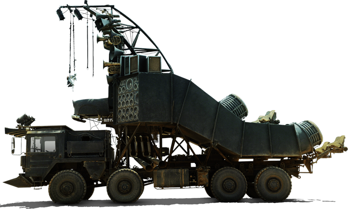
DOOF WAGON
EVERY ARMY HAS A LITTLE DRUMMER BOY, TO KEEP THE BEAT AND STIR THE HEART, AND THE WAR BOYS OF THE WASTELAND ARE N EXCEPTION. HERE, MOUNTED DRUMMERS POUND A TAIKO BEAT ON HUGE RESONATORS BUILT OF AIRXON DUCT, WHILE COMA THA DOOF WARRIOR, BLIND AND DISFIGURED, SLUNG IN A WEB OF BUNGY AND SPREAD-EAGLED BEFORE A STACK OF SPEAKERS, HURTLES ACROSS THE DESERT LANDSCAPE ON A REPURPOSED 8X8 M.A.N MISSILE-CARRIER. THE WAIL OF THE BANCHEE. THE DISTORTED LICK AND DEMENTEDM, DRIVING BASS, THE CALL TO ARMS AND THE BAYING FOR BLOOD. ALL MUSIC TO THE EARS AND GRIST TO THE MILL, A SYMPONY, A SONG, A SINGEL SCREAM, THE SOUNDTRACK TO THE END OF CIVILISATION. BUT WE GO OUT DANCING.
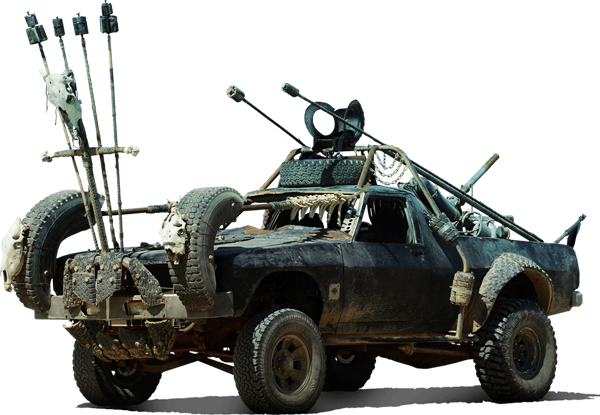
FIRECAR
1970'S HOLDEN HZ UTE TRIMMED IN RADIAL RUBBER AND BLEACHED BONM, A GASTOWN CHASE VEHICLE BUILT FOR BRUTALITY AND BBQ. THUNDERSTICKS FROM FRONT AND GUNNELS AND FLAMETHROWER FROM TH REAR TRAY. DRIVER, SHOTGUN, LANCERS AND GUNNERM, A SLICK TEAM TO SWAMP AND SLOW THE QUARRY FOR THE FOLLOWING POLECATS TO PURSUE, PILLAGE AND PLUNDE.
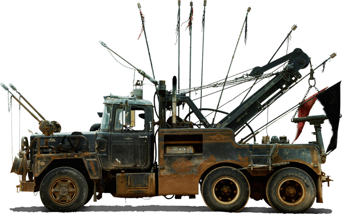
MACK
MACK IS THE CITADEL TOW TRUCK, THE BULLDOG IN CHARGE OF SWEEPING BEHIND THE ARMADA COLLECTING AND RECYCLING THE SPOILS OF WAAR AND LOADING THE CAR CARIER LUMBERING BEHIND THE OFFENSIVE WITH PRECIOUS SALVAGE. LIKE THE REST OF THE FLEET MACK IS A HEAVY-DUTY RECOVERY VEHICLE NOT IMMUNE TO THE CALL TO ARMS AND HELL-BENT ON HURLING HARPOONS AND A HAIL OF BULLETS AT ANY AND ALL CAUGHT UNAWARES ON THE FURY ROAD.
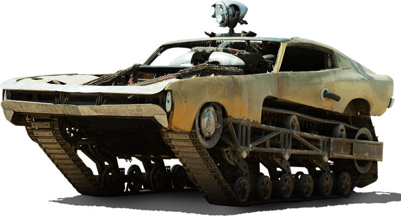
THE PEACEMAKER
WHO DARES TO JOCKEY A WATER-COOLED MERLIN V8 IN THE DRY DESERTS OF THE APOCALYPSE? THE SAME MAN WHO MARRIES MUSCLE CAR AND MACHINE GUN, TANK TREAD AND TORPEDO, ARSENAL AND ANGST - THE BULLET FARMER. A HIGH-SPEED, HIGHLY MANOEUVRABLE, GO ANYWHERE MACHINE WITH MORE ARTILLERY THAN YOUR BASIC DEATH CULT AND LESS MORAL COMPUNCTION. THE PEACEMAKER IS A '70'S VALIANT BRONZE WHALER AND DEVOURER OF DESERT SAND AND OF MEN.
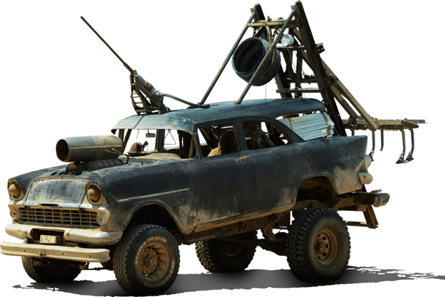
THE PLOUGHBOY
AN EH WAGON JACKED UP OVER AN OFF-ROAD FRAME AND RIGGED WITH HARPOON AND HYDRAULIC-DRIVEN PLOUGH TO TAG DRAG VICTIMS TO AN EVENTUAL STANDSTILL AND INEVITABLE 'HARVEST'. ONCE A CITADEL CONVOY VEHICLE THE PLOUGBOY WAS SOLD, STOLEN OF SALVAGED AND REPURPOSED AS A TRACTOR IN THE BULLET FARM PLAINS, TILLING THE BLOODIED EARTH FOR SPENT CARTRIDGE, CARILAGE AND CORPSE.
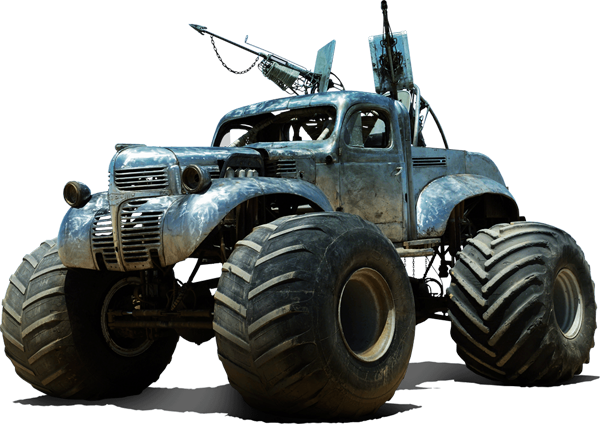
THE BIG FOOT
WEAPON OF CHOICE FOR RICTUS, THE FIRST AND SOMEWHAT DAMAGED SON OF THE IMMORTAN JOE. AT ALMOST 7FT TALL THIS WARRIOR NEEDS A LOT OF CAR. THE HEAVY 1940'S BEATEN STEEL OF A FARGO WORKHORSE HOUSES A SUPERCHARGED V8 TAMED BY TURBO 400 AUTO TRANSMISSION DRIVING 66-INCH TERRA TYRES VIA A PLANETARY GEAR REDUCTION HUB SET IN HEAVY DUTY AXLES FROM AN EX-MILITARY SUPER TANKER.FOUR FOOT OF SUSPENSION TRAVEL AND ALMOST 600 CUBIC INCHES OF DISPLACEMENT MAKE IT THE ONLY VEHICLE CAPABLE OF CLIMBING A FALLEN MOUNTAIN WITH THE IMMORTAN HIMSELF IN THE DRIVER'S SEAT AND HIS SON JOCKEYING HARPOON AND BELT-DREIVEN MACHINE GUN. BOUND TO END IN TEARS...
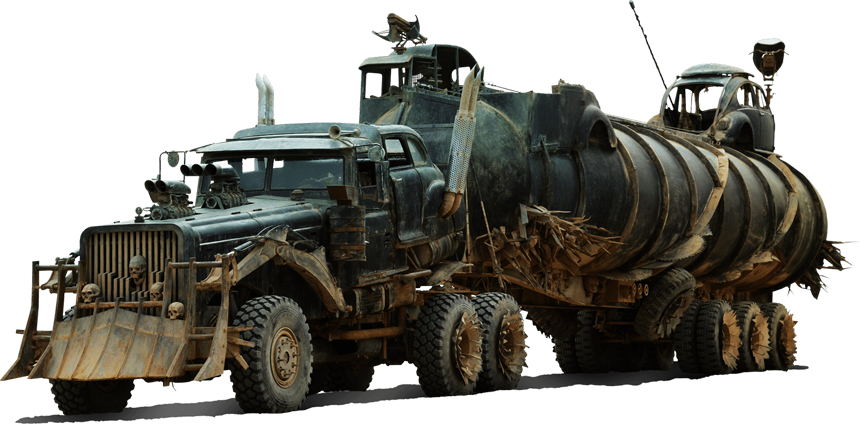
THE WAR RIG
MUTANT LOVECHILD OF SEMI-TRAILER AND HOTROD, TWIN V8'S END-TO-END, 6 WHEEL-DRIVE, EIGHTEEN-WHEELED LEVIATHAN CHARGED WITH THE BARTER OF FLUIDS AND FIREARMS THAT BINDS THE THREE CITY-STATES OF THE WASTELAND IN TENUOUS ALLIANCE. SHE (AND 'SHE' SHE MOST DEFINITELY IS) BESTRIDES THE FURY ROAD, A BEAST OF WAR AS MUCH A BEAST OF BURDEN, PILOTED BY THE MOST TRUSTED WARRIOR AND HERALDED DRIVER OF THE CITADEL, FURIOSA. A DOZEN ELITE WAR BOYS HUNKER DOWN ON THE TRUCK AND TRAILERS OF THIS MASSIVE MACHINE AND A CONVOY OF CARS AND MOTORBIKES TRACK WITH HER ACROSS THE DESERT, A FINGER TO TEH APOCALYPSE AND THE DOWNFALL OF MAN. BRING IT ON...
VEHICLE SHOWCASE
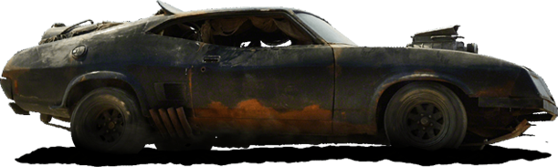
INTERCEPTOR
MAX'S ORIGINAL MUSCLE CAR, THE GLORIOUS XB FALCON COUPE-ONCE OF THE HIGHWAY NOW A WOUNDED BEAST OF SALVAGE AND SAND, FORCED OFFROAD AND RUNNING ON THE SMELL OF AN ONLY RAG.SCOTT HAT AND BELT-DRIVEN BLOWER INTACT BUT BATTERED, TYRE MORE RAG THAN RUBBER, RUSTED THRUGH AND RATTLING WITH ONE TOO MANY REPAIRS AND FAR TOO FEW ORIGINAL PARTS. A LEGEND SPOTTED IN THE GUTTER, PUNCH DRUNK BUT STILL PROUD, LEFT BEHIND BY HISTORY'S DOWNWARD SPIRAL, OUT OF PLACE BUT NEVER OUT OF CONTENTION...SIMPLY THE BEST, TINA.
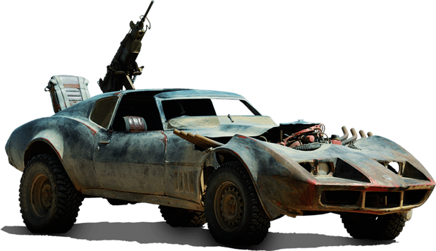
BUGGY
THE PERENTTI (TWO T'S LIKE ING CORVETTE, GET IT?) WAS A CLASSIC AUSTRALIAN MISTAKE - A SPORTS CAR MODELLED AFTER AMERICAN MUSCLE CARS YET GIVEN A FIBREGLASS MONOCOQUE BODY AND PITCHED AT THE MID-LIFE CRISIS MARKET. HERE IN THE APOCALYPSE, WHERE MANKIND IS HAVING AN ALTOGETHER MORE CRUCIAL BREAKDOWN. THE PERENTTI LOOKS ALMOST RIGHT YET SEEMS TO CRAVE A VERY LARGE GUN TO GAIN LEGITIMACY AND STREET CAREDIBILITY.
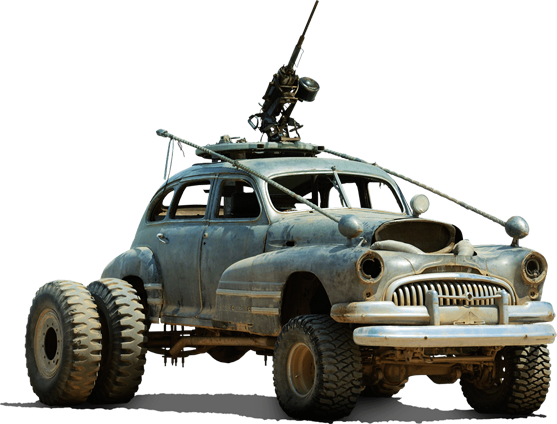
BUICK
BEATEN AND POLISHED, STRIPPED AND SHINING, STRADDLING AN EXTENDED REAR DIFF AND DOUBLE REAR WHEELS. THE BUICK IS THE STANDARD BEARER AND PERSONAL GUARD FOR THE THE GIGAHORSE AND IMMORTAN JOE. A BACK UP CREW OF TRUSTED WAR BOYS HUNKER CLOSE BY TO SUPPLY COVER FIRE FROM A SLEW-RING TURRET AND ANTI-AIRCRAFT GUN, EVER READY TO MAKE THE LEAP AS REINFORCEMENT OR RETALIATION.
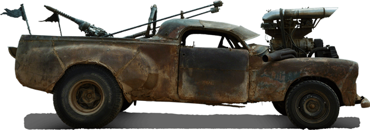
CRANKY FRANK
THE RADICALLY CHOP-TOPPED HOLDEN FJ RAT ROD WITH A 4-INTAKE SUPERCHARGED V8 HURTLES A CREW OF TWO-A DRIVER BLINDED BY A TOWER OF CARBURETTORS AND A BELT-DRIVEN BLOWER ALONG WITH A TAIL-GUNNER EATING DUST AND SPITTING DEATH AND CALTROPS FROM THE REAR TRAY. CRANKY FRANK IS THE TRUSTED IF PSYCHOTIC POINT MAN FOR IMMORTAN'S PERSONAL RETINUE, CONVOY GUARD AND GUIDE TO THE GIGAHORSE; THE BEAST THAT PUT THE 'S' IN CAR AND THE 'F' IN UTILITY.
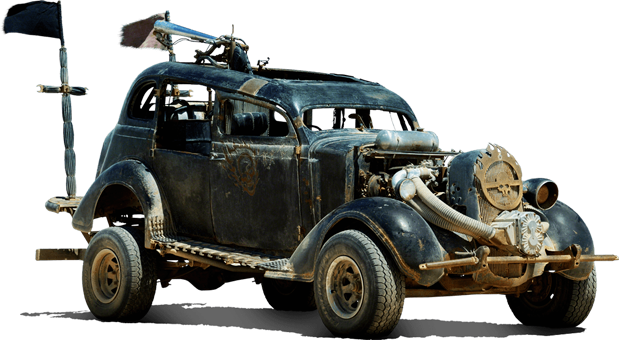
DODGE
THE PREMIER FIRE OF THE CITADEL, A FLAME-THROWING ATTACK DOG 'LIBERATED' FROM GASTOWN, PITCHED IN THE CITADEL'S BLACK LIVERY AND PRESSED INTO SERVICE IN THE GREAT CHASE. AN OLD SCHOOL HOT ROD, ASPIRATER WITH A ROOTS BLOWER MOUNTED LOW AHEAD OF THE RADIATOR, SUCKING IN AIR DUST IN NEAR EQUAL PROPORTION AND THEREFORE SPORTING THE SECOND-TO-LAST PAIR OF PANTYHOSE IN CHRISTNDOM AS A FILTER. A GREAT DRIVER, AND ALSO NITROUS ASSISTED, THE DODGE RUNS A HEALTHY COMPETITION WITH NUX'S CAR. IT REACHES THE QUARRY ALMOST AS QUICKLY.
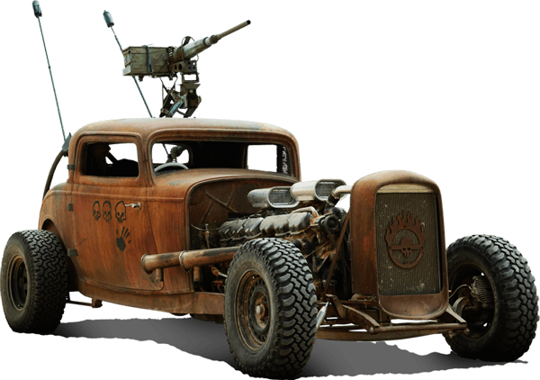
ELVIS
A PAIR OF GMC 6'S SLUNG END-TO-END ON THE EXTENDED CHASSIS RAILS OF A 3-WINDOW COUPE MAKE FOR THE CUTTURAL RUMBLING OF A V12. WITH NITROUS INJECTION AND A SINGLE GUNNER KEEPING THE POWER TO WEIGHT RATIO WAY DOWN ELVIS EARNS HIS PLACE AS THE HI-SPEED OUTRIDER OF THE WAR RIG CONVOY, THE HEARTBEAT OF BARTER ON THE FURY ROAD.
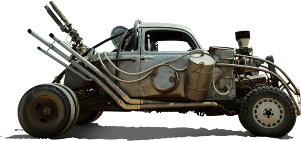
FDK
A SUPERCHARGED V8 VOLKSWAGEN, FDK OPERATES AS CONVOY GUARD FROM GASTOWN FOR THE PEOPLE EATER'S MERCEDES LIMOUSINE; THE HORIZONTAL CRACKING TOWER THAT IS THE FUEL TRUCK. FDK'S SLICK SILVER FINISH, THE DRUMS OF FUEL, THE DOUBLE-BARRELLED FLAMETHROWER AND THE TRIPLE EXHAUST PIPES ARE LOVE POEMS TO THE HUGE MACHINE HEATING AND COUDENSING AND EXCRETING PRECIOUS GUZZOLENE AS IT ROARS ACROSS THE EMPTY PLAINS IN PURSUIT AND PILLAGE.
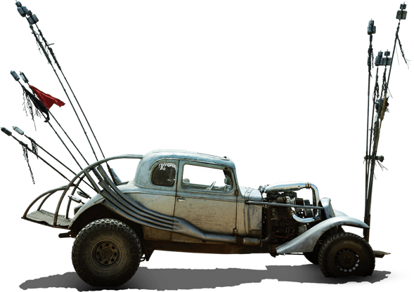
THE NUX CAR
A SUPER-TURBOCHARGED, NITROUS-BOOSTED 5-WINDOW DEUCE COUPE. THIS VEHICLE IS EVERY HOTRODDER'S DREAM AND THE PERFECT CHARIOT FOR YOUNG NUX, A TRUE BELIEVER AND GUN DRIVER IN THE CITADEL ARMADA WHO PUTS THE FUN BACK IN FUNDAMENTAL AND WHOSE FAILING FLESH FETISHIZES THE FURY AND POWER OF THE V8 HE HOPES WILL LEAD HIM TO VALHALLA. NUX IS THE DELIVERER OF DEATH, THE FAN NAD THE FANATIC, A LOYAL SERVANT AND LETHAL SAVANT AND THE CAR IS HIS ART, HOPE AND HEART.
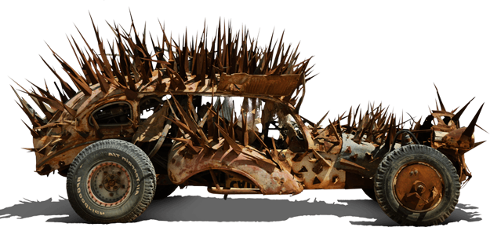
PLYMOUTH ROCK
THE BUZZARDS WERE THE BASEST OF THE TRIBES OF THE WASTELAND, HYENAS HARRYING THE HUNTER WITH SPIKE AND SHARD, SWARMING IING PACKSM SNAPPING AND SAWING AT ANYONE FOOLISH ENOUGH TO VENTURE INTO THE BADLANDS SURROUNDING THE LAST ROAD. CARRION EATERS, THEY WAGED THE WAR OF SCRAP MERCHANTS NOT MECHANICS, SOUGHT NOT SALVAGE AND REBIRTH BUT RAW MATERIAL TO CONSUM; SAW STEEL NOT SEDAN, MEAT NOT MAN.
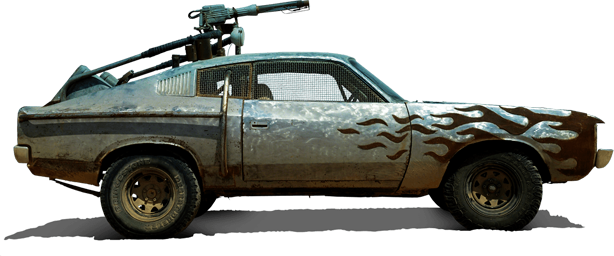
PRINCE VALIANT
A FIRE-BREATHING VALIANT CHARGER V8 MUSCLE CAR OF AUSTRALIAN HERITAGE. WITH PAINT STRIPPED AWAY BY SANDSTORM AND SPEED AND SPORTING THE RUSTED METAL STYLING OF FLAME OVER BONNET AND GUARD, THE CAR IS A GASTOWN EMISSARY ARMED WITH HIGH-VOLUME FLAMETHROWER AND MOLOTOV GRENADES AND A CREW OF THREE INTENDED FOR INITIAL ASSAULT AND HIGH-SPEED CHASE.
{kind=link}
{kind=link}
{kind=link}
{kind=link}
{kind=link}
{kind=link}
{kind=link}
{kind=link}
{kind=link}
{kind=link}